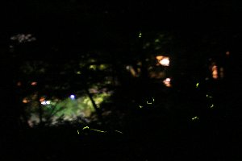
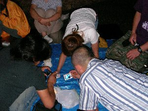

天城ホタル狩り＆ホタルコーヒー集会 | 2006年6月 企画（天城：あっくん、集会：MAX） |
|---|---|
| 今年の初め、「花いっぱい温泉」に行く途中で、あっくんが「天城のホタルは凄いよ」と言ったのをきっかけに、天城温泉＆ホタル狩りに行くことになりました。 募集をしたところ、総勢8名が参加。言いだしっぺの悲しさか、あっくんが車出し、運転を請け負って頂き、8人乗りの車に8人で行きました。 乗る前は、狭いかな？と、心配しましたが、そんなことは無く、遠足に行く時の様に、ワイワイガヤガヤとドライブを楽しめました。4人乗りだと、ここまで盛り上がらないよね。 夕方に伊豆の湯屋 光琳に到着。いきなり玄関前に救急車が鎮座していたのには、びっくりしましたが、内風呂、野天温泉、檜風呂と有り、なぜか人も少なく、ここでものんびりお喋り。 温泉からあがって、そのままそこで夕食をとり、目的地の天城の「出会い橋」目掛けて出発です。 | |
 ホタル看板 |  緑色の細い光がホタルだよ |
| 駐車場に車を止めて、徒歩で出会い橋まで。 さすがに人が多く、出会い橋では両脇に人の群れ。人の頭越しに橋下を見ると、暗闇に輝くエメラルドグリーンの光が！ 橋の照明は消してあるので、暗闇の中をふわふわと、漂う光は神秘的です。 今日は気温が低く、ホタルが舞う条件としてはあまり良くないらしい。 一旦、橋を通り過ぎ、ホタルの飼育小屋へ。 ここで、ホタルの生態、育成についてレクチャーを受けます。飼育されているホタルも間近に見れるため、結構良いですよ。 レクチャーを受けている時に、ホタルが一匹逃げ出してしまい、一緒に行った女性のメンバーの胸に取り付き、そこで光りだしました。これには本人もビックリしたようです。ついでとばかりに、飼育員さんは、その取り付いたホタルで説明をはじめ、狭くて暗い飼育小屋の中で、みんなの注目の的になっていました。 飼育小屋を後にして、今一度出会い橋へ。今度は橋の下に降りてみます。橋の下のほうが暗いかと思いきや、川面に遠くの光が反射して、ちょっぴり明るいです。しかし、飛んでいるホタルは間近に見ることが出来、自分も真上を飛ぶと、つい手を伸ばしてしまいます。 今回飛んでいるのは源氏ホタルで、光は強く、とても奇麗です。 レクチャーを受けて分かった事ですが、ホタルと言う種は沢山いるけれど、光らなかったり、昼間飛んでたりする種も有るそうです。 ホタルを堪能し、そのまま静岡へ帰宅。終始運転ありがとうございました。＞あっくん <(_ _)> | |
 ランタンの明かりでコーヒー集会 |  一匹のホタルを巡り撮影大会 |
| さて、それだけでは寂しいので、今回はもう一つのイベントを紹介。 静岡組限定と為ってしまうのが申し訳ないけど、平日とかの夜に、車でちょっと山の方に走り、コーヒー集会なんてのもやってます。今回は、＋ホタルと言うことで、ホタルコーヒー集会と為った様子を。 静岡も車でチョット走ると、結構ホタルがいる場所まで行けたりします。 ココは、車で30分ぐらいの山の中。まだまだ人家は有るけれど、その川にはホタルが舞っています。 その横でロウソクランタンを出して、コーヒー集会と洒落込みました。 ホタルの数は少なかったけど、お菓子を突きながらのコーヒーは美味しいです♪ ホタルが現れたりすると、凄い大騒ぎ！ みんなでデジカメ撮影会になったりしてました。 かなり、夜遅くまでお喋りとホタルを満喫して、日頃のストレスを発散し、気持ちの良い夜でした。 このようなホタルは居なくても、結構夜のコーヒー集会はやっていたりしますので、お暇な方はどうぞ。 | |
| 写真＆コメント ｂｙ べっしー | |